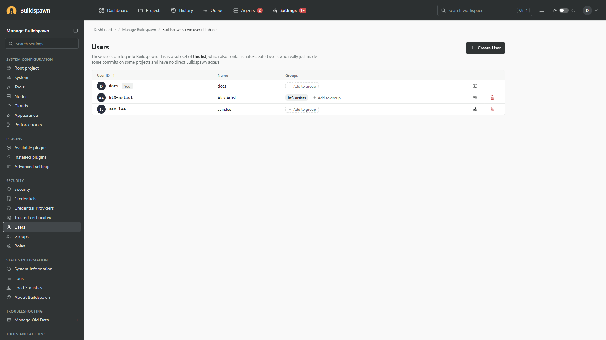
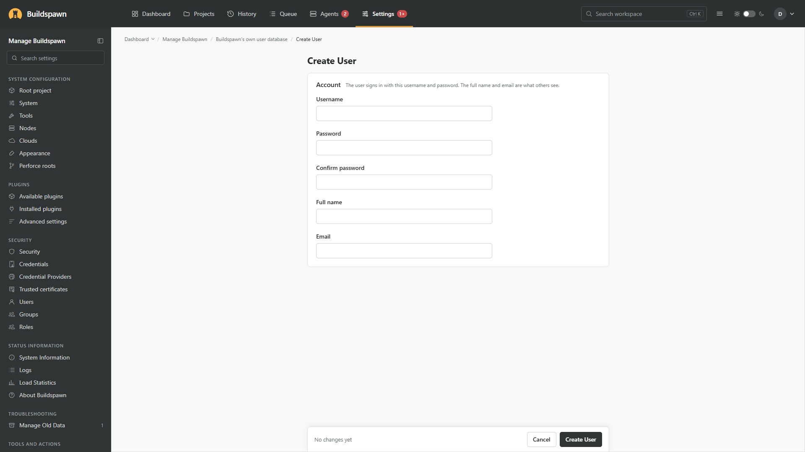
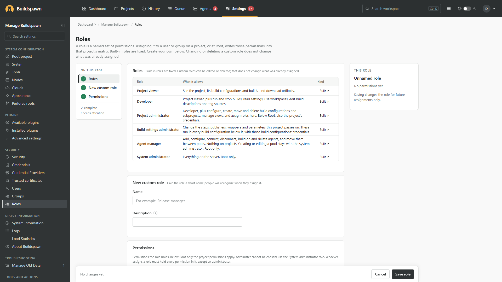
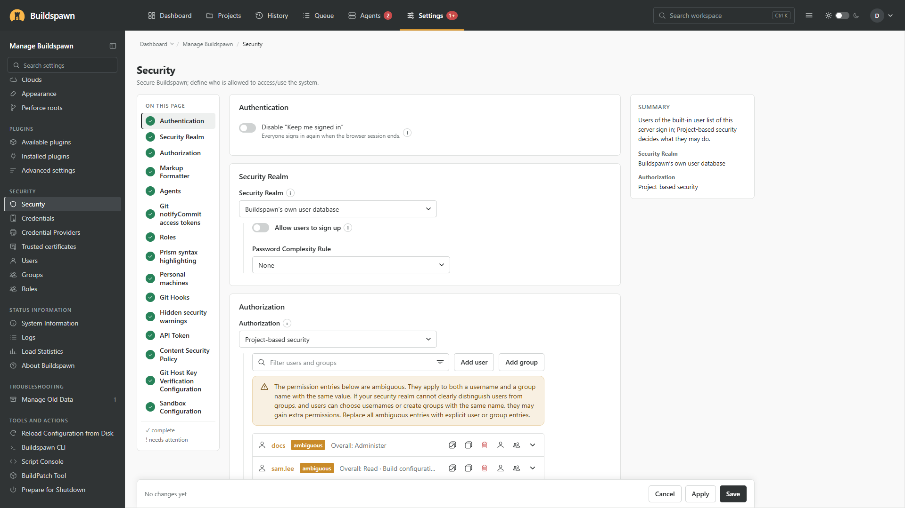

Users and permissions
Control who can sign in to Buildspawn and what each person can see and change.
Buildspawn controls access with four things that work together:
| Thing | What it is | Where |
|---|---|---|
| Users | The people who can sign in. | Settings › Users |
| Groups | A named set of users, so you can give rights to many people at once. | Settings › Groups |
| Roles | A named set of permissions, such as Developer. | Settings › Roles, and the Roles tab of each project |
| Permissions | The single rights, such as Job: Build. Roles are made of them. | Settings › Security |
You need the System administrator role (the Overall: Administer permission) to change any of these.
Users
Settings › Users lists everybody who can sign in, with their groups. Your own row is marked You.

Create a user
- Open Settings › Users and click Create User.
- Type a Username. People sign in with it, and it cannot be changed later.
- Type the Password twice, the Full name and the Email.
- Click Create User.
- Back in the list, click Add to group on the new row to put the user in a group.

A new user can sign in at once, but sees nothing until you give them a role or permissions. See Project roles below.
Change or delete a user
- Click the settings button on a row to change the user's name, email or password.
- Click the red bin to delete the user. You cannot delete yourself.
Each person can also change their own password, theme and API tokens from the account menu (the round button with their initial). See API tokens.
Groups
A group collects users, and other groups, so you can give a role to everybody in it at once. When someone joins the team, you add them to the group and they get the right access straight away.
The group All users is built in. It means every signed-in user. You cannot rename, empty or delete it. Where a permission card says Authenticated Users, it means this group.
Create a group
- Open Settings › Groups and click Create group.
- Type a Name, for example
Artists. Buildspawn makes the ID from it. You can change the ID now, but not later, because roles and permissions refer to it. - Add a Description if it helps.
- Optional: pick a Parent group. Members of this group then also belong to the parent.
- Click Create group. Then add members from the group's row or from the Users page.

Give roles to groups, not to single users. It is much easier to see who can do what, and to change it later.
Project roles
A role is a named set of permissions. You give a role to a user or group on a project, and it applies to that project and everything inside it: its subprojects and build configurations. Give a role at the Root project and it applies to the whole server.
Buildspawn has six built-in roles:
| Role | What it allows | Where you can give it |
|---|---|---|
| Project viewer | See the project, its build configurations and builds, and download artifacts. | Any project |
| Developer | Everything a viewer can do, plus run and stop builds, read settings, use workspaces, edit build descriptions and tag sources. | Any project |
| Project administrator | Everything a developer can do, plus configure, create, move and delete build configurations and subprojects, manage views, and give roles on this project. | Any project |
| Build settings administrator | Change the steps, actions and parameters a project passes down to every build configuration below it. | Any project |
| Agent manager | Add, configure, connect, disconnect and delete agents, and move them between pools. | Root only |
| System administrator | Everything on the server. | Root only |

Give a role on a project
- Open the project (or Root project for the whole server) and click the Roles tab.
- Click Assign a role.
- Choose User or Group, and type the user ID or group name.
- Pick the role and click Assign, then Save.
The Roles tab also shows the roles inherited from above and Your roles here. A role given on a parent project is changed on that parent, not here.
The Roles tab only appears when Settings › Security › Authorization is set to Project-based security. With any other choice, the Roles page shows a yellow note that roles are off. You can still prepare custom roles.
Make your own role
- Open Settings › Roles.
- Under New custom role, type a Name and a Description.
- Tick the permissions the role holds. They are grouped as Overall, Credentials, Agent, Job, Run, View and SCM.
- Click Save role. It now appears on every project's Roles tab.
- Below Root, only the project permissions of a role apply.
- Administer cannot be put in a custom role. Use System administrator instead.
- To give someone a role, you must hold every permission in it yourself, unless you are a system administrator.
- Changing or deleting a custom role does not change the people who already have it. Their permissions stay as they were.
Permissions
Roles write single permissions into the permission cards, one card for each user or group. You can also edit the cards directly, for rights no role covers.
- Open Settings › Security and scroll to Authorization.
- Click Add user or Add group, and type the name.
- Open the card with the arrow on the right and tick the permissions.
- Click Save.

The two special cards are Anonymous (people who are not signed in) and Authenticated Users (everybody who is signed in, the same as the group All users).
The main choices for Authorization are:
| Choice | What it means |
|---|---|
| Matrix-based security | One grid for the whole server. |
| Project-based security | The server grid, plus a grid and a Roles tab on each project. Choose this to use project roles. |
| Logged-in users can do anything | Every signed-in user is an administrator. Only for a test server. |
| Entra ID Matrix-based security | The same cards, with a people picker for your Entra ID directory. |
| Anyone can do anything, Legacy mode | No checks at all, or the old admin-or-read-only behaviour. See Authorization. |
Tips
- Lock-out: before you save a new authorization choice, make sure your own user or group has Overall: Administer. Otherwise you lose access to Settings.
- A yellow ambiguous label means the entry could match a user and a group with the same name. Open the row and choose user or group to fix it.
- Use Settings › Security › Security Realm to choose where users come from: Buildspawn's own user database, or single sign-on such as Entra ID or SAML.
Go deeper
Security realms
Where users come from, and how to switch safely.
Entra ID sign-in
Register the app and sign in with work accounts.
SAML sign-in
Single sign-on with your identity provider.
Authorization
Every strategy, the permission cards and every permission.
Roles
Built-in and custom roles, and how to give them.
Users and groups
Create users, groups and end sessions.
User settings
Every setting on a person's own pages.
Security settings
The whole Security page, section by section.
Trusted certificates
Trust your company's root CA.